Полное руководство по всем экранам и функциям приложения.
G-Force Skiing - персональный лыжный тренер в кармане. Подключите датчики к ботинкам - приложение само считает GF Score, разбирает технику по метрикам и подсказывает, какой навык тренировать дальше, поворот за поворотом. Без датчиков тоже работает - как трекер маршрутов по GPS, которыми можно поделиться с друзьями. Ниже - три основных сценария использования.
Катаетесь как обычно, в своё удовольствие, ни о чём не думая - приложение всё пишет само и считает статистику в фоне, лезть в него по ходу катания не нужно.
Целенаправленная отработка одного конкретного навыка, а не катание вообще. Приложение следит именно за теми метриками, которые входят в этот навык, и уведомляет, когда поворот выполнен правильно, - вместо общей статистики за весь спуск вы получаете прогресс по узкой цели.
Датчиков ещё нет или не взяли их с собой - приложение всё равно может писать маршрут по GPS, а треком можно поделиться с друзьями.
При первом запуске приложение показывает экран приветствия с кратким описанием возможностей и ключевыми цифрами: частота опроса датчика, автономность, количество метрик и время калибровки.
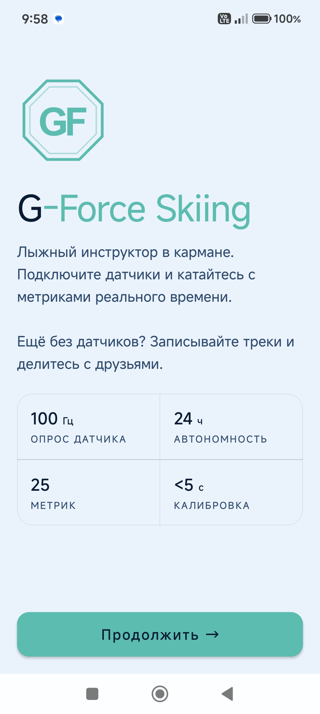
Нажмите «Продолжить →», чтобы перейти на главный экран - «Мои успехи».
Датчики на этом шаге ещё не обязательны: без них можно записывать треки по GPS и делиться ими с друзьями (см. раздел 8).
Приложение приходит с уже заполненными демонстрационными данными - несколько спусков, в том числе пара «расшаренных» треков друзей, и стартовый прогресс по навыкам. Это нужно, чтобы сразу увидеть, как выглядят дашборд, история и тренировки, ещё до первого реального катания. Перед началом использования эти данные стоит удалить - кнопка «Удалить все данные» в разделе 3.
Открывается автоматически при первой настройке или вручную с главного экрана настроек (карточка «Датчик» → «Поиск и сопряжение новых G-Force датчиков»).
В debug-сборках приложение изначально настроено на Mock-датчик (раздел 13) - реальные датчики он не ищет и не подключает. Для работы с настоящим G-Force датчиком сначала переключите тип сенсора на WT в Настройки → Тип датчика.
Инструкция: 1. Включите оба датчика - нажмите кнопку один раз, держать не нужно. Индикатор быстро замигает - можно начинать сопряжение. 2. Нажмите «Начать поиск» → выберите найденные датчики → дождитесь зелёной лампочки на обоих. 3. Встряхните один из датчиков - он станет датчиком для левой ноги, второй автоматически станет правым.
Чтобы выключить датчик - зажмите кнопку: индикатор загорится ровным светом, затем погаснет.
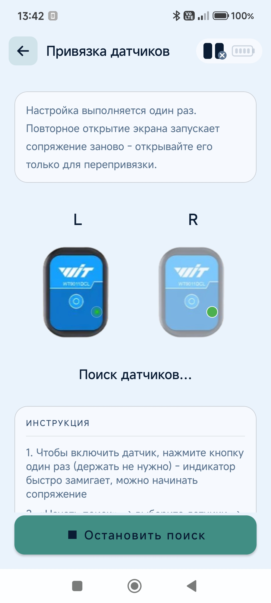
Настройка выполняется один раз. Повторное открытие этого экрана запускает процесс сопряжения заново - используйте его только если нужно перепривязать датчики.
Показывает текущее состояние подключения, заряд каждого датчика и живые данные ориентации (закантовка, уклон, вращение - по 100 Гц с обоих датчиков).
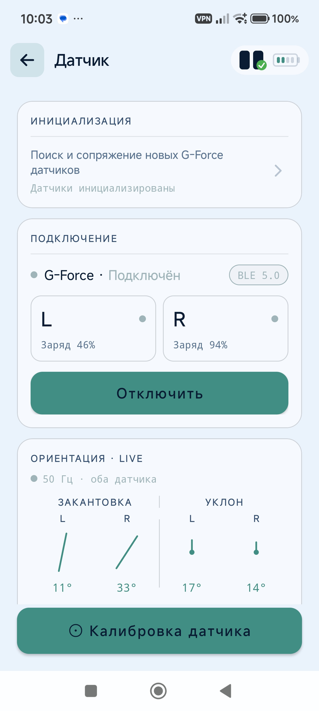
Открывается с главного экрана настроек (карточка «Лыжник»).
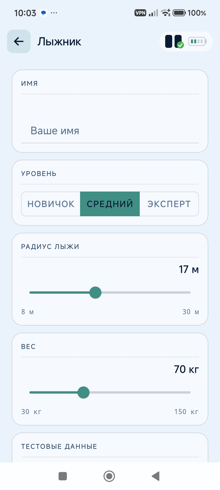
Поля: - Имя - для подписи в шаринге треков. - Уровень - Новичок / Средний выбираются вручную; Эксперт присваивается автоматически, когда вы реально достигнете нужного прогресса навыков по всем 3 дисциплинам - вручную выбрать его нельзя. Уровень влияет на то, при каком прогрессе навык считается освоенным, и какие рекомендации «Поработать над этим» показываются после спуска. - Радиус лыжи (8–30 м) - радиус бокового выреза ваших лыж; используется в расчёте метрик карвинга. - Вес (30–150 кг) - используется для оценки калорий.
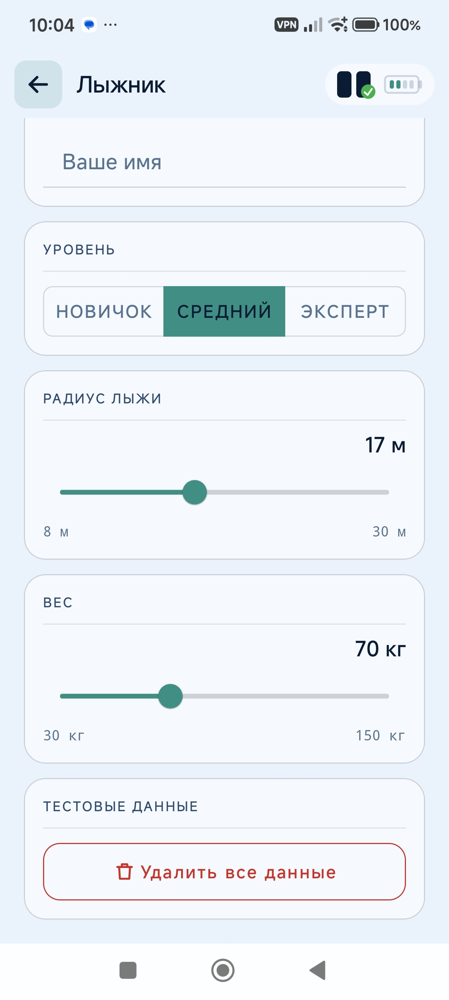
«Удалить все данные» внизу экрана - это полный и необратимый сброс: удаляются все записанные спуски, история, прогресс тренировок - в том числе демонстрационные данные, которыми приложение заполнено при первой установке (см. раздел 1). Единственный способ обнулить весь прогресс. Учтите: удаление не различает демо- и реальные данные, стирает всё разом, и повторно демо-данные не создаются.
Все данные (спуски, история, прогресс навыков, профиль) хранятся только локально на устройстве, на сервер не отправляются. При переходе на новый телефон Android может перенести их автоматически - через свою стандартную резервную копию (Google-аккаунт). Для этого на новом телефоне при первоначальной настройке нужно выбрать «Восстановить из резервной копии» и указать тот же Google-аккаунт, что был на старом телефоне; сам бэкап на старом телефоне должен успеть сняться заранее (обычно происходит само по себе на Wi-Fi при зарядке, раз в 1–2 дня - не мгновенно после установки).
Главный экран приложения (вкладка «Дом»). Показывает статистику текущего сезона - сезон определяется автоматически по датам последних сессий (без разрыва в несколько месяцев между ними), отдельного переключателя сезона на этом экране нет.
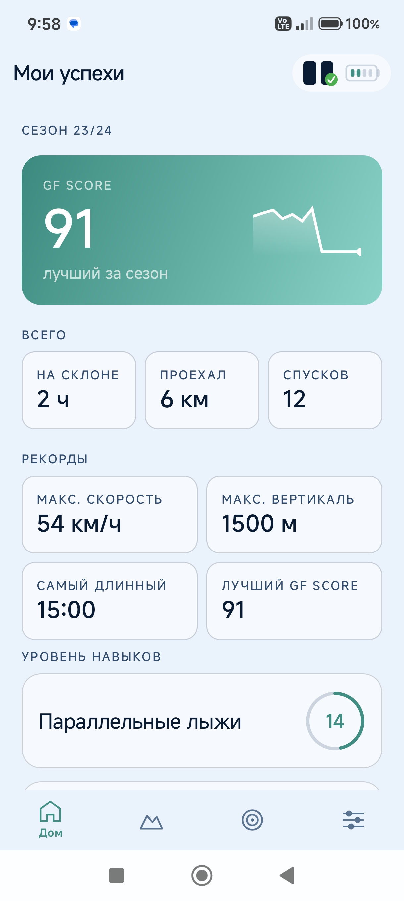
Ниже - уровень по каждой из трёх дисциплин (Параллельные лыжи, Карвинг, Короткий радиус), кольцо показывает текущий уровень навыка по шкале от 0 до 30. Диапазоны 1–10 / 11–20 / 21–30 подписываются как «Новичок» / «Средний» / «Эксперт» - это просто метка достигнутого уровня, а не отдельная ступень, которую нужно «открывать»: шкала для всех одна и та же от 0 до 30.
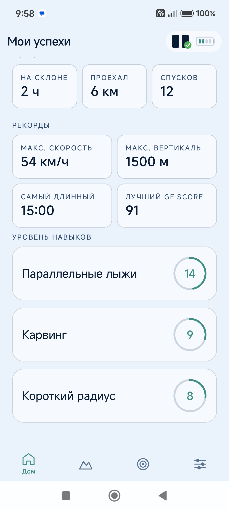
Окно «Склон» (средняя иконка нижней навигации) - центр управления сессиями.
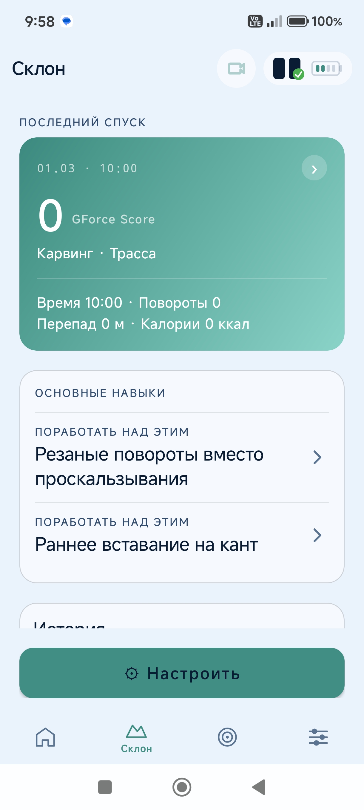
Как считаются рекомендации. Навыки в каждой дисциплине идут по порядку сложности (от простых к сложным - это встроенная программа обучения). Для каждого навыка берутся все ваши завершённые спуски этой же техникой катания за последние 9 месяцев; по каждому спуску, где было хотя бы 8 поворотов, считается свой уровень (0–30) - берутся 8 лучших поворотов спуска по этому навыку (необязательно подряд, просто самые сильные из всех) и вычисляется медиана между ними; спуски короче 8 поворотов в расчёт не идут. «Подтверждённый» уровень навыка - это не последний спуск и не лучший, а 5-й по величине среди всех таких спусков (нужно минимум 5 спусков с засчитанным результатом, иначе уровень навыка = 0) - так одна удачная сессия не завышает прогресс. Дальше среди навыков по порядку ищется первый, где подтверждённый уровень ещё ниже порога «освоено» для вашего Уровня (Новичок/Средний/Эксперт - 7/17/27 из 30, см. раздел 3) - он и следующий за ним становятся карточками «Поработать над этим» (максимум 2). Если таких навыков не осталось - дисциплина на вашем Уровне полностью освоена, карточек «Поработать над этим» нет.
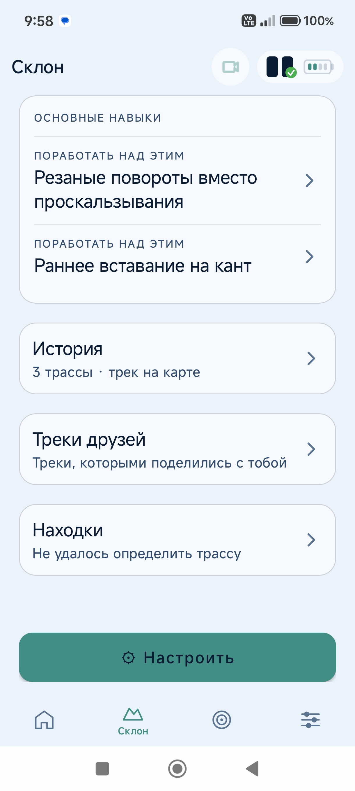
Кнопка внизу экрана открывает настройку сессии:
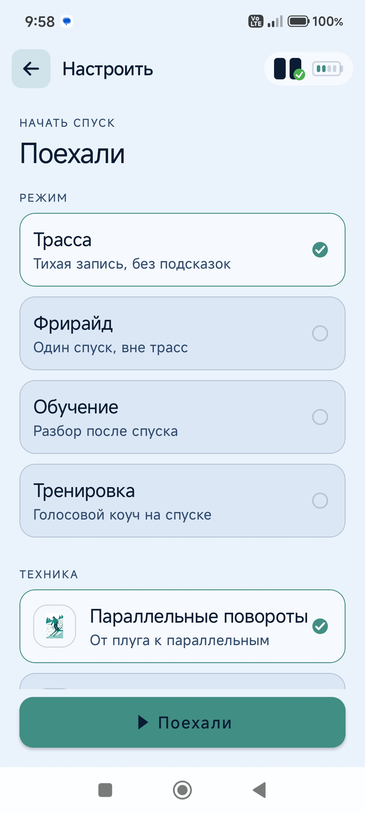
Режим: - Трасса - тихая запись, без подсказок. - Фрирайд - один спуск, вне трасс. - Обучение - разбор после спуска. - Тренировка - уведомления о правильном выполнении прямо во время спуска.
Прокрутите вниз, чтобы выбрать технику катания (используется для расчёта весов GF Score):
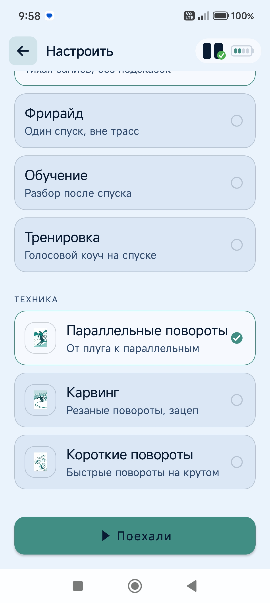
Нажмите «▶ Поехали» - начнётся запись. Пока сессия активна, кнопка внизу экрана «Склон» меняется на «■ Готово на сегодня»:
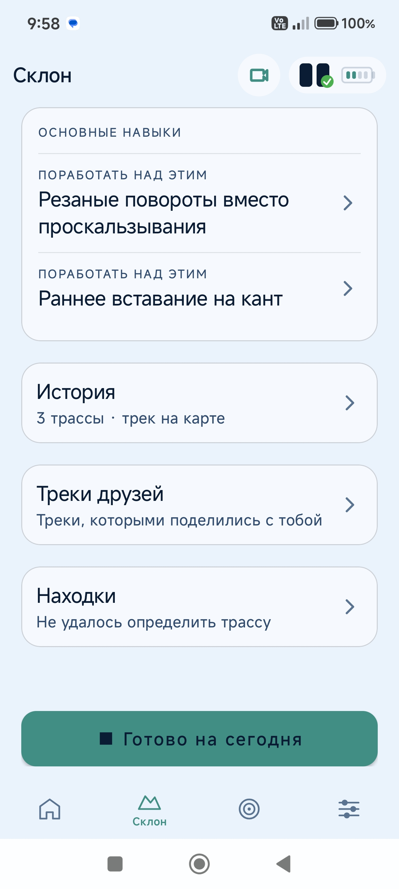
После завершения спуска откройте его из истории или с карточки «Последний спуск» - откроется экран деталей:
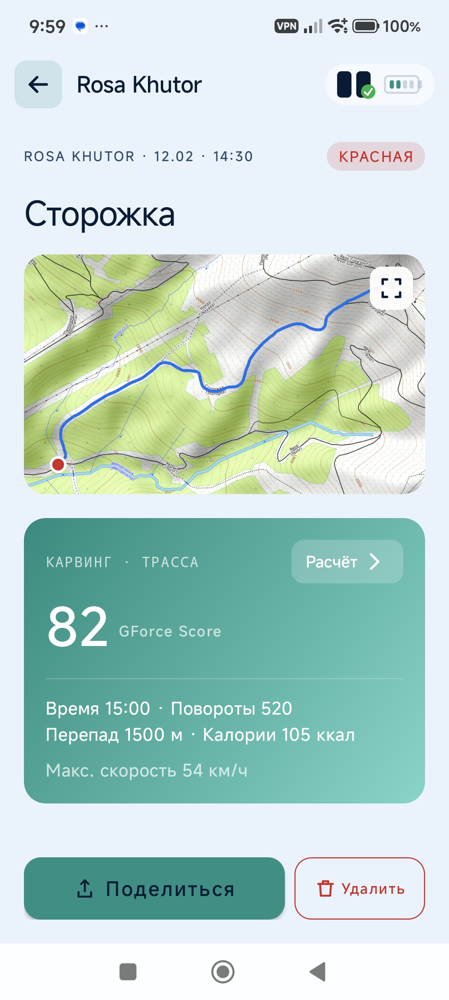
Зелёная карточка показывает итоговый GF Score, время/повороты/перепад/калории и макс. скорость. Кнопка «Расчёт» открывает подробную разбивку:
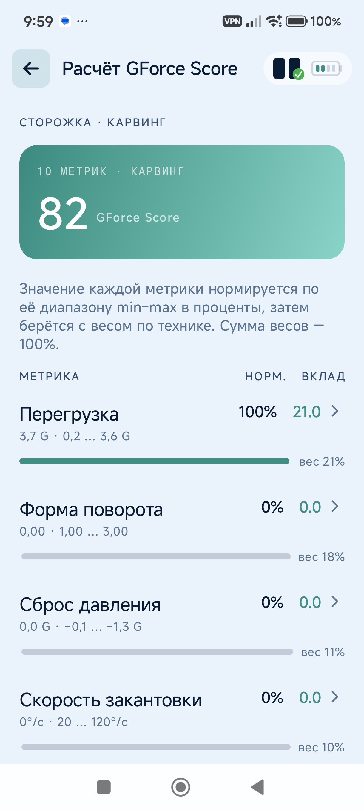
Каждая метрика нормируется по своему диапазону min–max в проценты, затем берётся с весом по выбранной технике катания - сумма весов всегда 100%. Набор метрик один и тот же, но их веса, а значит и порядок в разбивке, зависят от техники, выбранной при настройке сессии (раздел 5.1):
Что означает каждая метрика:
В конце экрана - два инсайта:
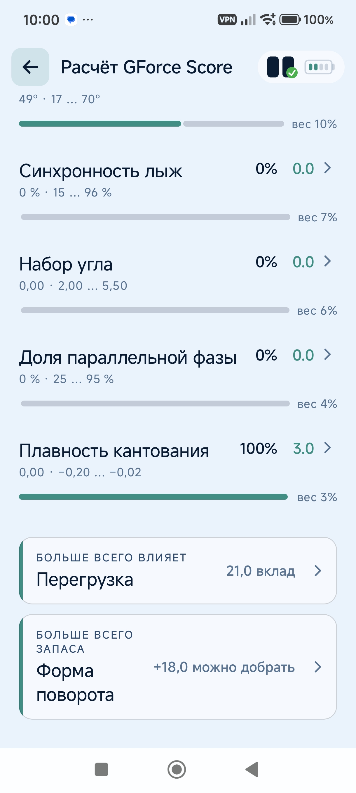
Нажатие на метрику или на инсайт разворачивает описание и (если для метрики есть привязанный навык) ссылку на соответствующую тренировку.
Если во время сессии велась видеозапись (кнопка-камера в шапке экрана «Склон»), на карточке спуска и на экране расчёта GF Score появляется кнопка «▶ Видео». Она открывает совместное воспроизведение видео и графика score с бегущим маркером текущей позиции:
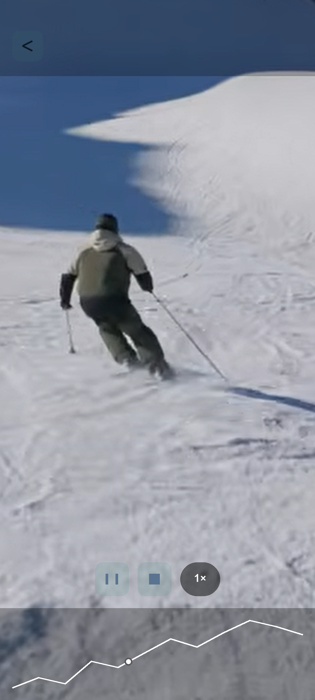
Управление внизу экрана: - Пауза / Играть - остановить/возобновить воспроизведение. - Стоп - пауза и перемотка в начало, маркер на графике сбрасывается на 0. - 1× / 0.5× / 0.25× - переключатель скорости воспроизведения (удобно для разбора техники покадрово).
Карточка «История» на экране «Склон» → список курортов, где вы катались:
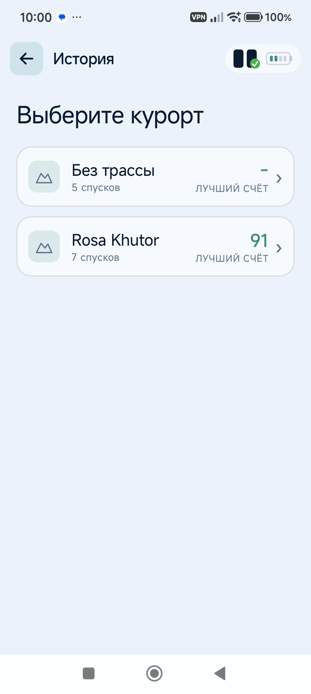
Выберите курорт, чтобы увидеть список спусков с фильтром Сегодня / Сезон / Всё время:
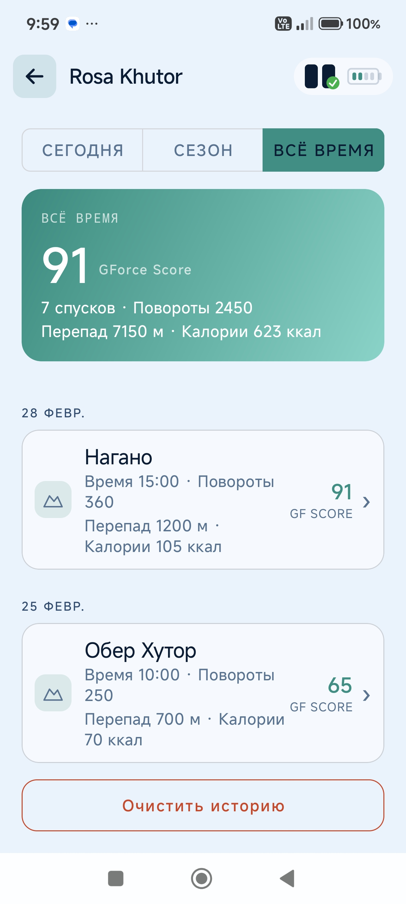
Сверху - сводная карточка (лучший счёт, число спусков, суммарные повороты/перепад/калории за выбранный период), ниже - список отдельных спусков по датам. Кнопка «Очистить историю» удаляет спуски выбранного курорта (не затрагивает профиль и прогресс навыков).
Если во время спуска приложению не удалось сопоставить GPS-трек с известной трассой (нет офлайн-данных курорта, либо трасса ещё не добавлена в OpenStreetMap), сессия попадает в «Находки». Показываются только последние 10 находок (самые новые сверху) - более старые, если их накопится больше, в список не попадают:
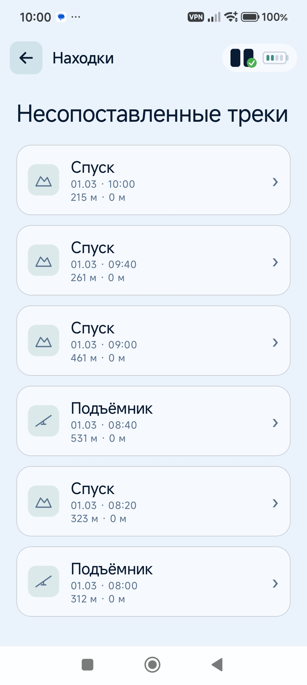
Нажмите на запись, чтобы добавить её на карту вручную:
Для трассы - укажите название курорта, название трассы и сложность:
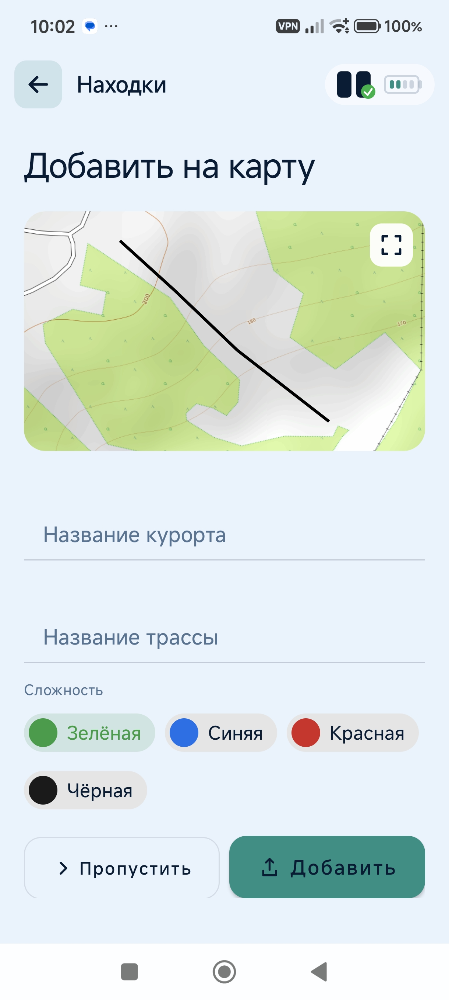
Для подъёмника - название курорта, название и тип подъёмника (гондола/кресельный/бугельный):
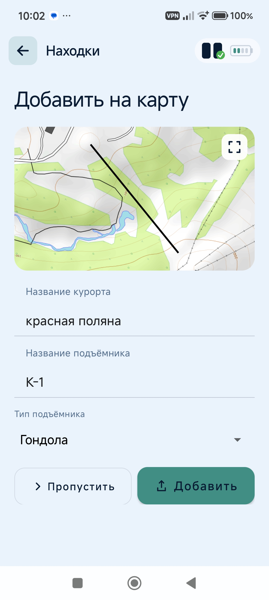
Кнопка «Пропустить» убирает запись из списка «Находки» без отправки данных на OpenStreetMap - сам трек при этом не удаляется, он остаётся в истории спусков, просто больше не появляется среди находок. «Добавить» отправляет трек на OpenStreetMap (нужен подключённый OSM-аккаунт - см. раздел 11).
Вкладка «Тренировка» → выбор дисциплины:
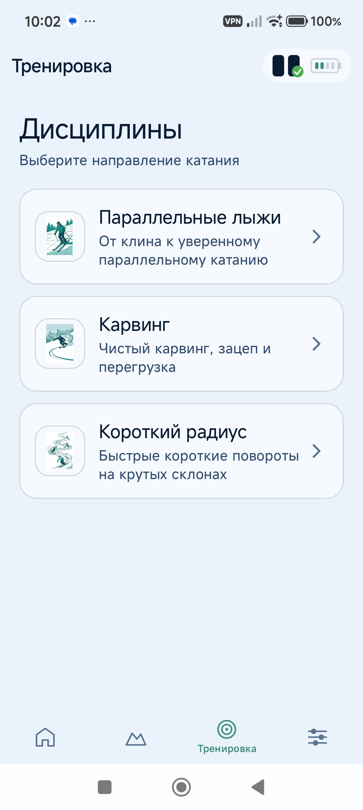
Каждая дисциплина (Параллельные лыжи / Карвинг / Короткий радиус) содержит набор навыков с текущим уровнем (0–30):
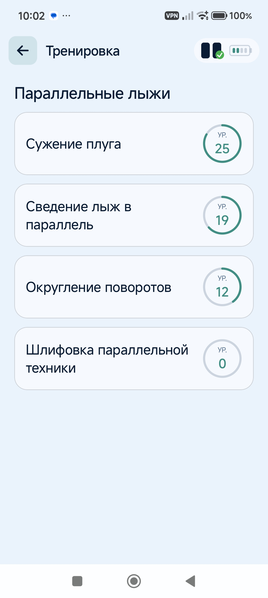
Внутри навыка - описание, текущий уровень, ссылка «Как измеряется» и цель следующего уровня с коротким обучающим видео:
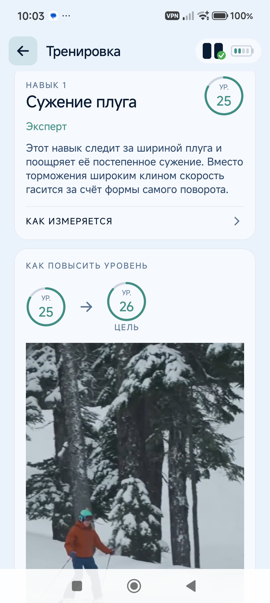
Ниже - конкретная числовая цель уровня (например, «8 поворотов подряд с шириной плуга < 10°») и кнопка «Тренировать», которая запускает тренировку прямо на склоне. Если навык не даётся - блок «Застряли? Попробуйте упражнение» с видео вспомогательных упражнений:
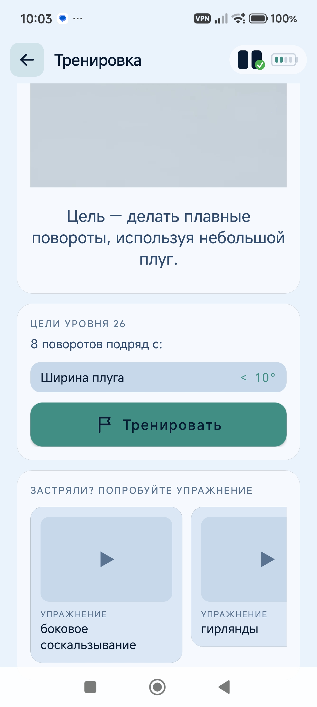
Другая дисциплина («Карвинг») со своим набором навыков - для примера:
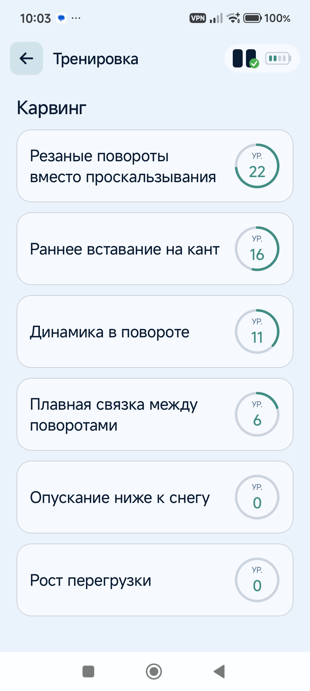
Карточка «Карта» на главном экране настроек → офлайн-загрузка трасс и подъёмников из OpenStreetMap:
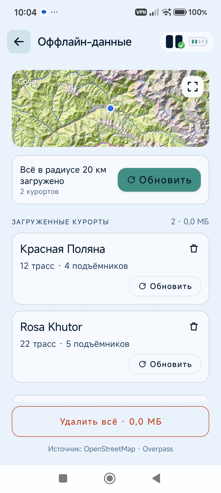
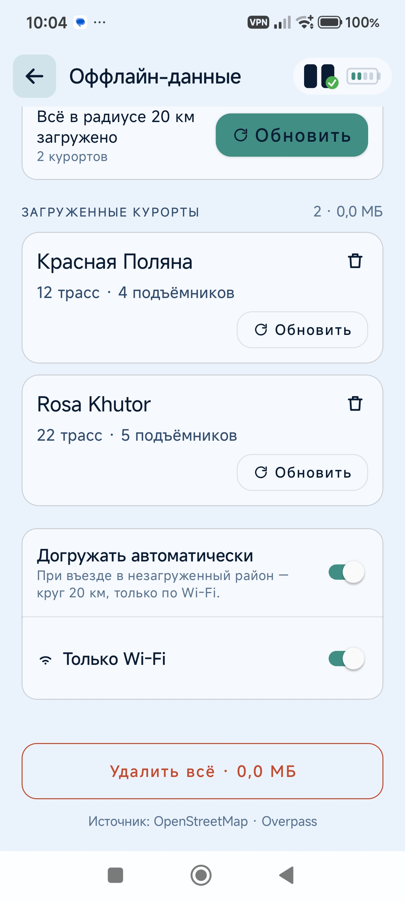
Нажатие на превью карты открывает её на весь экран (жесты масштабирования/перемещения):
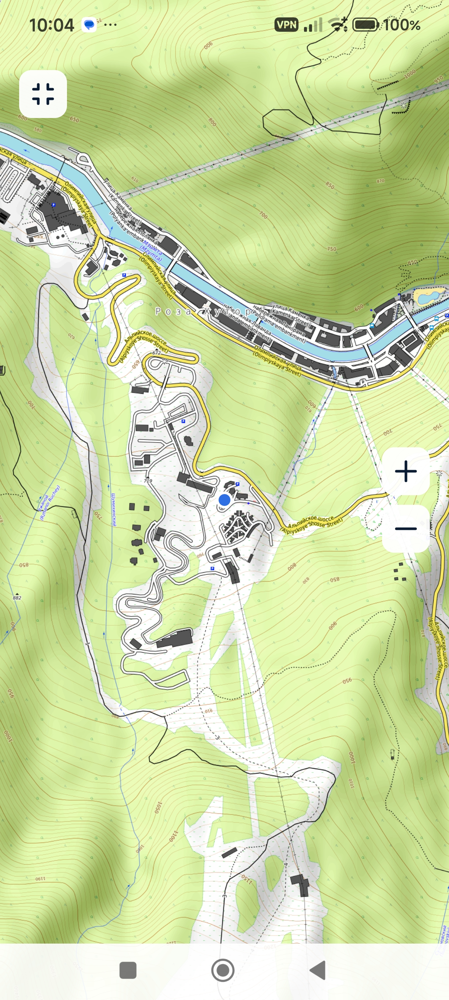
Если сеть недоступна и тайлы карты не загружены, вместо пустого/шахматного фона показывается значок карты и надпись «Нет соединения».
Отдельная карточка на главном экране настроек - загрузка ваших треков в OpenStreetMap:
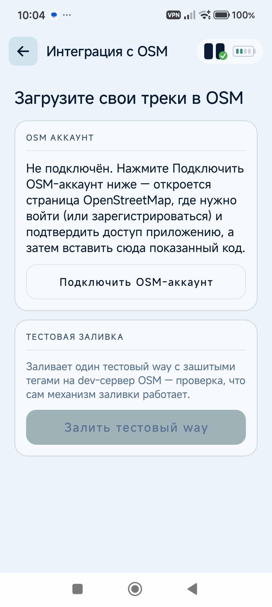
Настройка аккаунта для загрузки: 1. Нажмите «Подключить OSM-аккаунт» - в браузере откроется страница OpenStreetMap. 2. Войдите в свой аккаунт OpenStreetMap (или зарегистрируйте новый, если его ещё нет) и подтвердите доступ приложению. 3. OpenStreetMap покажет код авторизации - скопируйте его. 4. Вернитесь в приложение, во всплывшем окне «Вставь код из браузера» вставьте код и нажмите «Подключить».
После подключения кнопка меняется на «Отключить», а находки (раздел 9) можно отправлять на карту одной кнопкой.
Каждый пользователь подключает свой собственный аккаунт OpenStreetMap, а не общий аккаунт приложения - это намеренное решение: если кто-то отправит некорректные данные, санкции со стороны OpenStreetMap коснутся только его личного аккаунта, а не заблокируют загрузку для всех пользователей приложения сразу.
Треки, которыми с вами поделились другие пользователи, доступны с карточки «Треки друзей» на экране «Склон»:
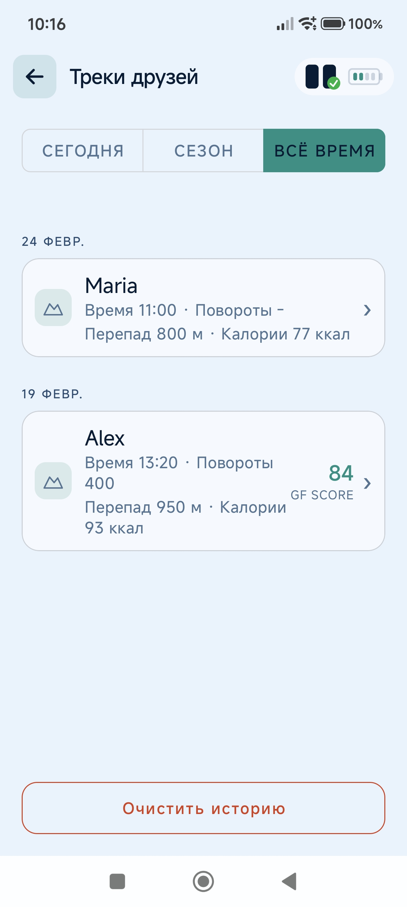
Список работает так же, как история собственных спусков (фильтр Сегодня/Сезон/Всё время). Открытие записи показывает те же детали спуска - карту, GF Score, статистику - что и для своих сессий:
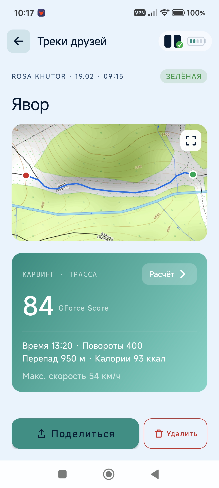
Поделиться своим спуском с друзьями можно кнопкой «Поделиться» на экране деталей любого своего спуска (раздел 6).
Вкладка «Конфигурация» (последняя иконка нижней навигации) - точка входа во все разделы настроек:
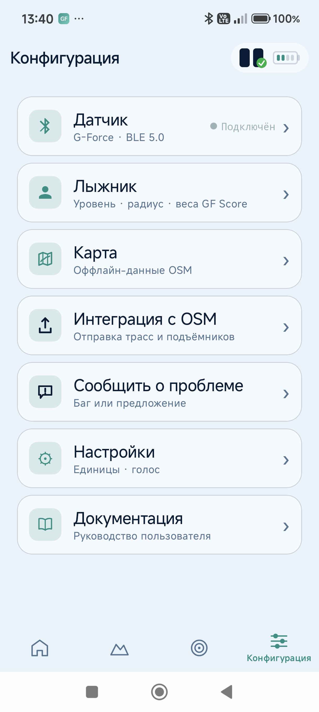
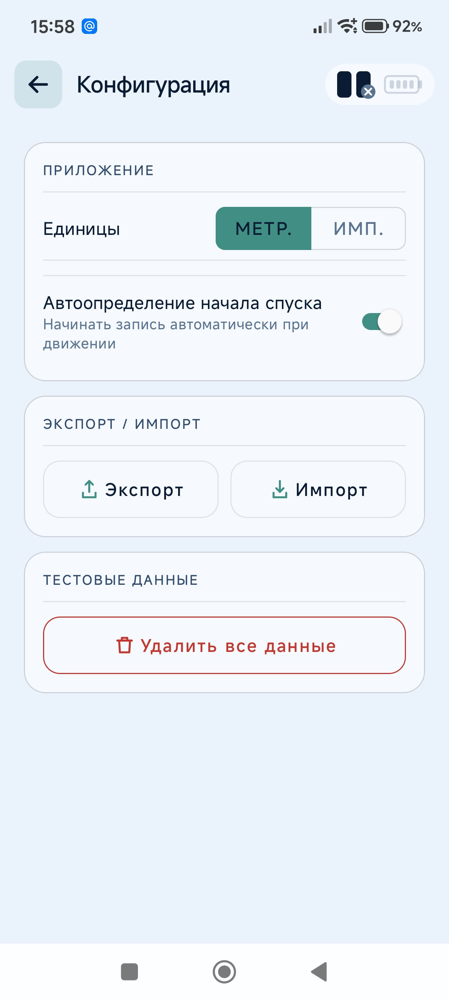
G-Force не привязан к фирменному «железу» - пара датчиков собирается самостоятельно из недорогих компонентов, заказанных на маркетплейсе.
На один датчик (для полноценной работы приложения нужно собрать два - на левую и правую ногу):
Все три позиции были куплены на Ozon, себестоимость одного датчика в сборе - около 2500 ₽. Для пары датчиков, соответственно, ~5000 ₽ - заметно дешевле готовых фирменных решений с аналогичной функциональностью.
Из инструментов пригодится небольшая крестовая отвёртка (клипса крепится к корпусу винтами) и, желательно, кусочек двустороннего скотча или термоклей, если штатная посадка датчика в коробочке окажется свободной.
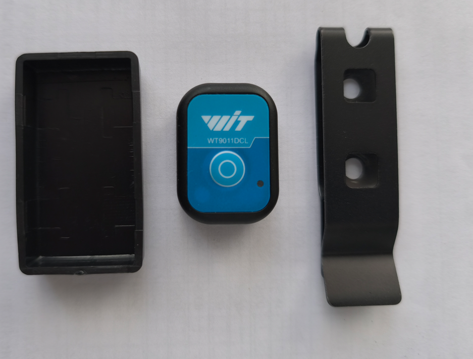
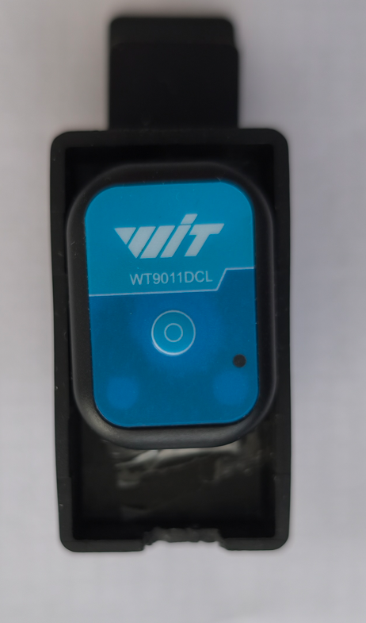
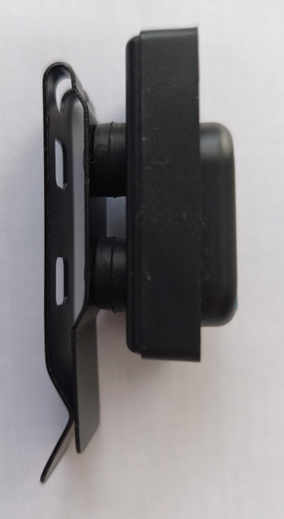
Повторите сборку для второго датчика - на этом этапе не важно, какой из двух станет «левым», а какой «правым»: это определяется не при сборке, а при первом сопряжении с приложением (см. раздел 2.1) - вы встряхиваете один из датчиков, и он назначается левым, второй автоматически становится правым.
Клипса рассчитана на крепление сбоку ботинка, на ремне - так, чтобы датчик плотно прилегал и не болтался во время катания (любой люфт корпуса добавляет шум в данные акселерометра и гироскопа). Крепите оба датчика симметрично - на одном и том же месте на обоих ботинках, иначе показания закантовки будут несопоставимы между ногами.
Перед первым катанием после сборки выполните калибровку в нейтральной стойке - раздел 2.2. Также после установки в новый корпус возможен небольшой дрейф магнитометра из-за металлических деталей клипсы - если заметите нестабильный курс/вращение, переустановите калибровку ещё раз, уже стоя на лыжах в ботинках.
Документация подготовлена для G-Force Skiing.